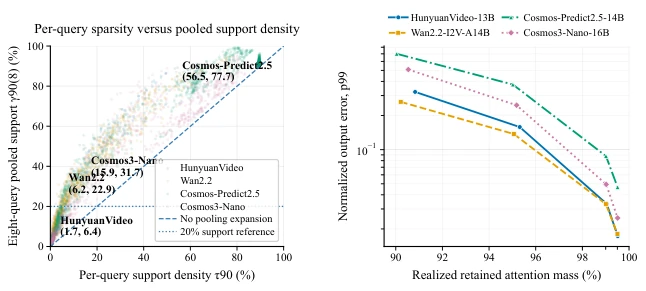
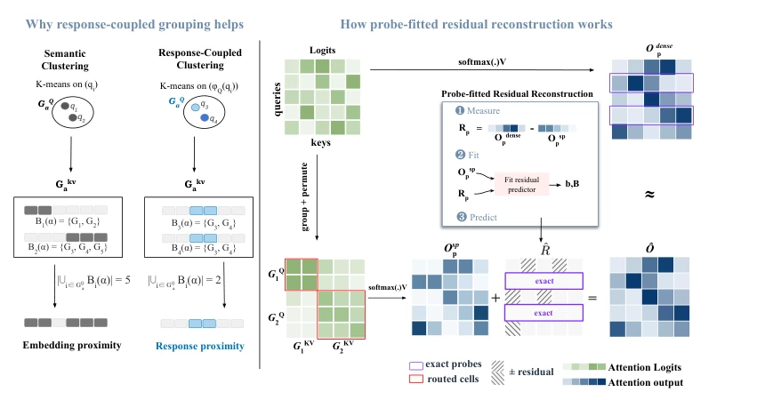

This paper pours cold water on inference acceleration for video generation and world models: merely focusing on "how much attention mass is retained" is a sham, because the overlap degree of the support set during shared routing is the real flaw, while the error after skipping interaction is more of a mystery. The authors did not engage in fancy offline training, but instead developed a "training-free" SparsePR framework, attempting to "stitch" back the pruned residuals using mathematical means. Although the 2.6x acceleration is indeed attractive, but whether that residual reconstruction strategy, which "fits the global based on testing only a few rows", will collapse under extreme long sequences or complex physical dynamics, the authors dare not guarantee. This is like using a few matchsticks to repair cracks in a dam, looking quite beautiful, but when facing floods (long video generation), it still depends on luck. However, being able to pull PSNR back to near dense model levels without fine-tuning, this "stitching" skill is indeed impressive, at least much more reliable than those blindly pruned "naked" methods.
Video generation models (such as Wan2.2, Cosmos series) and physical world models face a huge inference bottleneck with quadratic self-attention mechanisms when processing long spatiotemporal sequences. Existing training-free sparse attention methods (such as SpargeAttention, SVG2, SVOO, etc.) mainly rely on row-level attention concentration for pruning, but this has three fatal defects: First, row-level sparsity cannot determine the support set expansion during shared routing (Shared-Route Support), for example, in Wan2.2 a single row requires only 6.2% support, but 8 rows sharing routing require 22.9%; Second, retained attention mass (Retained Mass) does not directly correspond to post-Softmax error, and different models have huge error differences under the same retention rate; Third, existing sparse execution schemes often ignore the impact of partitioning geometric structure on residual representability. These defects cause existing methods to often sacrifice generation quality or physical prediction accuracy when pursuing speed, failing to achieve true "lossless" acceleration in video generation and physical world simulation.

Figure 3: Structural observations under the semantic reference partition. (a) Per-query versus eight- query pooled support at 90% attention mass. Vertical displacement above the diagonal indicates support expansion under pooling. (b) p99 normalized attention-output error versus realized retained attention mass. Comparable retained mass can produce different post-softmax errors across models.
The SparsePR framework consists of two core modules, aiming to solve the aforementioned support set and residual error problems. First is "Response-Coupled Partitioning", which is an online, training-free partitioning strategy. It does not rely on static semantic clustering, but uses sampled Queries in the current attention call to construct response coordinates for Keys, grouping Key/Value; Subsequently, it uses the centroids of these groups to construct response coordinates for Queries, grouping Queries. This asymmetric coupling ensures that Queries sharing routing have similar support sets, thereby reducing redundant computation brought by support set expansion. Second is "Probe-Fitted Residual Reconstruction". After sparse computation, the system selects a small number of Query rows for exact dense attention calculation (as probes), using the residuals between these probes' sparse outputs and true dense outputs to fit an affine map (Affine Map) targeting the current call. This map projects sparse outputs to the residual space, used to predict residuals for unprobed Queries and correct outputs. Additionally, the method introduces output subspace projection, limiting residual prediction to directions observed by probes, preventing overfitting. The entire process is executed fully online, requiring no offline training, achieving efficient block sparse execution through operators like FlashInfer.

Figure 2: Overview of SparsePR. Response-Coupled Partitioning builds executable K/V and query groups, and Probe-Fitted Residual Reconstruction uses exact probe rows to correct the sparse output.
The authors conducted evaluation on four heterogeneous models: HunyuanVideo, Wan2.2, Cosmos-Predict2.5, and Cosmos3-Nano, covering text/image generation and physical world prediction tasks. Baselines include SpargeAttention, SVG2, SVOO, and SVG-EAR, etc. Evaluation metrics cover PSNR, SSIM, LPIPS, VBench quality score, and PBench physical performance. Results show that SparsePR achieved 1.48x to 2.61x end-to-end acceleration under only 22%-26% pairwise density, and generation quality was nearly on par with dense baselines (e.g., PSNR reached 30.658 on Wan2.2, superior to SVG2's 26.562). Ablation studies indicate that Probe Fitting is the main contributor to error reduction, while Response-Coupled Partitioning further reduces hard pruning errors. On Wan2.2, the residual reconstruction module added only 1.1% latency overhead, proving its efficiency.
Figure 4: Partitioning and runtime analysis. (a) Error reduction from response-coupled vs. semantic partitioning at 22% density. (b) Wan2.2 full generation latency for Dense, SVG2, and SparsePR.